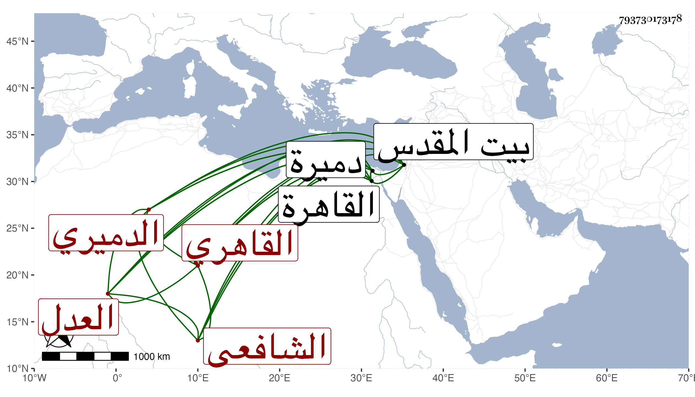

0902Sakhawi.DawLamic.ITO20230111-ara1.EIS1600.793730173178
Biography ID: 793730173178
1218
يوسف بن علي بن خلف بن محمد بن أحمد بن سلطان العدل الجمال أبو المحاسن بن العلاء الدميري القاهري الشافعي والد البدر محمد وعلي الماضيين . ولد سنة اثنتين وسبعين وسبعمائة أو بعدها بقليل وقيل سنة ثمان وستين بل قيل سنة ستين بدميرة وقرأ بها بعض القرآن ثم انتقل به أبوه إلى القاهرة فأكمله بها وعاد إلى بلده فلما مات أبوه تحول إلى القاهرة فقطنها عند ابن عمه الصفي إبرهيم الدميري وكان من أهل العلم يقال له القدسي لسكناه بالقدس مدة فنزله في مكتب الأيتام وحفظ التبريزي والمنهاج الأصلي وألفية النحو ، وعرض على الأبناسي والبلقيني وابن الملقن والكمال الدميري فيما أخبر وأنه تفقه على الأول والأخير وسمع بعض دروس النحو وسمع على النجم بن رزين والجمال الباجي والسويداوي والحلاي والجوهري وأم إبراهيم خديجة ابنة محمد بن أحمد القدسية ومما سمعه عليها الورع لأحمد وعلى الأول البخاري خلا المجلس العاشر ولم يجدد وعلى الثالث الجزء الثالث والتسعين من المعجم الكبير للطبراني وباشر ديوان بني الأسياد ثم ناب عن الصدر الأدمي في أوقاف الحنفية وعن ناصر الدين بن البارزي في نظر بيت المال والصندوق وعن التقي بن حجة في الطيبرسية ووقع في ديوان الإنشاء ، وحج غير مرة وجاور في بعضها وتكسب بالشهادة في حانوت البندقانيين ولزمه بأخرة مقتصرا عليه ، وكان خيرا ساكنا حدث بالصحيح وغيره قرأ عليه الفضلاء أخذت عنه الصحيح والورع وغيرهما قراءة وسماعا . ومات في شعبان سنة أربع وخمسين ودفن بحوش سعيد السعداء رحمه الله وإيانا .
